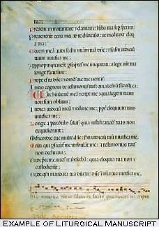

Cataloging Biblical Materials
Cataloging Instructions for Biblical Texts as Works of Art

After determining whether the item is a biblical text or a liturgical text, the next consideration is to ascertain whether the purpose of the item is to provide an artistic facsimile of a psalter or evangeliary. Since these liturgical books were most often produced during the Middle Ages, they have come down to us as manuscripts. More often than not, editions of psalters and evangeliaries are facsimile reproductions of these manuscripts rather than editions of liturgical books. That is, they are published with the intention of providing a work of art, or rather a facsimile of a work of art. As far as content is concerned, they are the same, but the publisher's intention is not to provide a workable
liturgical book.
As will be shown further on, they are classified in the NA
section of the schedules.
LCRI21.11B states:
|
Works using the word 'psalter', or a cognate, in the title proper or other title information are often reproductions of medieval
psalters, or of parts of these psalters, being published in order to present the art of the illustrative matter contained in the original psalter.
Enter these under the heading for the artist, or under title if the artist is unknown. If the artist is unknown, the main entry will be under title or
uniform title. In this connection, note the utility of the headings provided by 25.13. For example, the title of the work may not be more
than a general designation, e.g., Der Psalter : eine Bilderhandschrift. A uniform title, consisting of either the name of the manuscript or
the repository designation for the same -- according to the provisions of 25.13 -- is recommended for such cases. |
Also, one should take note of any other information pertaining to the manuscript. Just as liturgical directions are a clue that the item is a
liturgical book, details about the manuscript are a clue that the publication is artistic.
The remainder of the rule interpretation deals with how to deal with a psalter if the content is primarily textual. (For further information, see: Cataloging Instructions for Editions of Liturgical Texts) Supposing that a cataloger has a psalter (or an evangeliary) in hand that is a facsimile of an illuminated manuscript,
he/she must determine whether the artist is known. If not, then the cataloger will assign a uniform title following the sequence of priorities
listed in 25.13:
- a title has been assigned to the work subsequent to its creation or compilation;
- the name of the manuscript(s) if the work is identified only by that name;
- the heading ... of the repository followed by Manuscript and the repository's designation for the manuscript(s).
The rule further states: "If the uniform title is chosen by the application of a) or b) above and the item has a repository designation, refer from
that designation."
Examples:
| 130 | 0 | Parma psalter. |
| 245 | 14 | The Parma psalter :‡bCod. De
Rossi 510, Parm. 1870, Biblioteca palatina in Parma : [a Hebrew psalter with commentary of Abraham Ibn Ezra]. |
| 650 | 0 | Psalters‡vTexts. |
| 650 | 0 | Judaism‡xPrayer-books and
devotions‡xHebrew‡vEarly works to 1800. |
| 650 | 0 | Manuscripts, Hebrew‡zItaly‡zParma‡v
Facsimiles. |
| 650 | 0 | Illumination of books and manuscripts, Jewish‡z
Italy. |
|
| 110 | 2 | Liège.‡bUniversité.‡bBibliothèque.‡bMss. 431
(Cat. 1875, no. 10) [from old catalog] |
| 245 | 10 | Psautier liégeois du XIIIe siècle |
| 710 | 2 | Catholic church.‡kLiturgy and ritual.‡t Psalter. [from
old catalog] |
|
| 110 | 2 | Saint Catherine
(Monastery : Mount Sinai).‡kManuscript.‡nSlavic no. 5. |
| 245 | 10 | Psalterium Latinum
Hierosolymitanum :‡beine frühmittelalterliche lateinische Handschrift : Sin. Ms. no. 5 /‡c hrsg. v. Moshé Altbauer ; Kloster der
Heiligen Katharina auf Sinai. |
| 500 | The incompletely preserved codex includes major fragments of the Psalms,
biblical canticles, calendar, and the first 4 chapters of the apocryphal Passio Petri et Pauli. |
| 650 | 0 | Psalters. |
| 730 | 02 | Bible.‡lLatin.‡sSaint Catharine Monastery,
Sinai.‡kMSS.‡n(Slavic no. 5).‡kSelections.‡f1978. |
|
Name Authority Records
There are many examples in the Names Authority File of authority records for headings which designate both the heading for the
artistic object and the heading for the textual content. When this happens there is a separate authority record for each heading, with a
5xx reference for the other heading. The 670 field for each record often cites the same title. Also, there is a 667 field
that instructs how each heading is to be used. These notes are very useful for understanding the nature of the distinct headings, and for
understanding the principles that govern them.
Examples:
| 110 | 20 | Catholic Church.‡tPsalter (Ms. Landgraf Psalter) |
| 530 | 0 | Landgraf Psalter |
| 667 | Heading for the textual contents of the Landgraf Psalter. For the
manuscript as a physical entity, including its decoration, use: Landgraf Psalter. |
| 670 | Catholic Church. Landgrafenpsalter, 1992:‡binside lower
cover (Ms. HB II 24 of the Württembergische Landesbibliothek, Stuttgart) |
|
| 130 | 0 | Landgraf Psalter |
| 410 | 20 | Württembergische
Landesbibliothek.‡kManuscript.‡nHB II 24 |
| 510 | 20 | Catholic Church.‡tPsalter (Ms. Landgraf Psalter) |
| 667 | Heading represents the manuscript as a physical entity, including
its decoration. For textual contents of the ms. use: Catholic Church.‡tPsalter (Ms. Landgraf Psalter) |
|
The following bibliographic record employing the uniform titles listed above only shows relevant fields.
| 050 | 00 | BX2033.A3‡bL36 1210a |
| 110 | 20 | Catholic Church. |
| 240 | 10 | Psalter (Ms. Landgraf Psalter) |
| 245 | 10 | Landgrafenpsalter :‡bvollständige
Faksimile-Ausgabe im Originalformat der Handschrift HB II 24 aus dem Besitz der Württembergischen Landesbibliothek Stuttgart. |
| 500 | Full-color facsimile of the manuscript, which can be dated
between 1210 and 1213. |
| 610 | 20 | Catholic Church.‡xLiturgy‡xTexts. |
| 650 | 0 | Psalters‡xTexts. |
| 650 | 0 | Manuscripts, Latin (Medieval and
modern)‡zGermany‡zStuttgart‡xFacsimiles. |
| 730 | 0 | Landgraf Psalter. |
|

This example shows well how the two headings, showing textual content and artistic manifestation, relate to the same bibliographical item.
Both headings are accessible to users. The only problem here is the main entry. Since the item is a facsimile of a manuscript of a Psalter, and
the subtitle brings this out quite clearly, according to RI21.11B the name of the manuscript should be the main entry, and the
heading for the Church and the uniform title for the Psalter as a liturgical work should both be in a 7xx field.
Observation of several of these records has shown that there is a great variation in practice in the national database. For example, in one
case, even though a heading for a uniform title for the manuscript is found in the bibliographic file, and there is a 5xx reference for a
heading for the textual content in the NAF, the heading for the textual content cannot be found in the bibliographic file. There is often a
lack of consistency between the NAF and the bibliographic file, and also within bibliographic records. Even though in an online catalog
the issue of main entry is not so critical as long as access is provided, still consistency should be followed. This would call for the call
number, the main entry, uniform title and title/[subtitle if given] to complement each other and to, in a sense, point to each other. Added
entries would bring out other aspects of a given item.
|
The same considerations mentioned above apply also to various categories of liturgical works: Missals, Breviaries, Books of Hours, etc. If
the publication is a facsimile of an illuminated manuscript emphasising the artistic presentation of the item, and if it is clear that the artistic
presentation is the main or sole intention of the publisher, then the main entry, uniform title and call number should reflect the artistic aspect
of the publication.
|